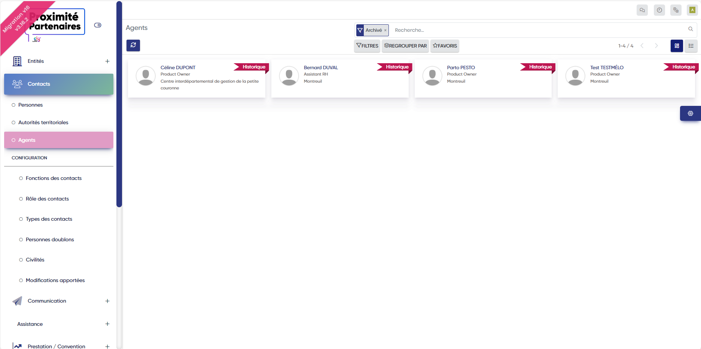

Projet n°3:
Création rubban pour collectivités archivées
Parfois, certaines collectivitées changent ou alors sont détruites, c'est pourquoi dans l'application, elles doivent être spécifiées comme "historique", je me suis occupé alors de réaliser un rubban permettant de les dissocier des autres collectivitées.
Ils se présentent ainsi:
